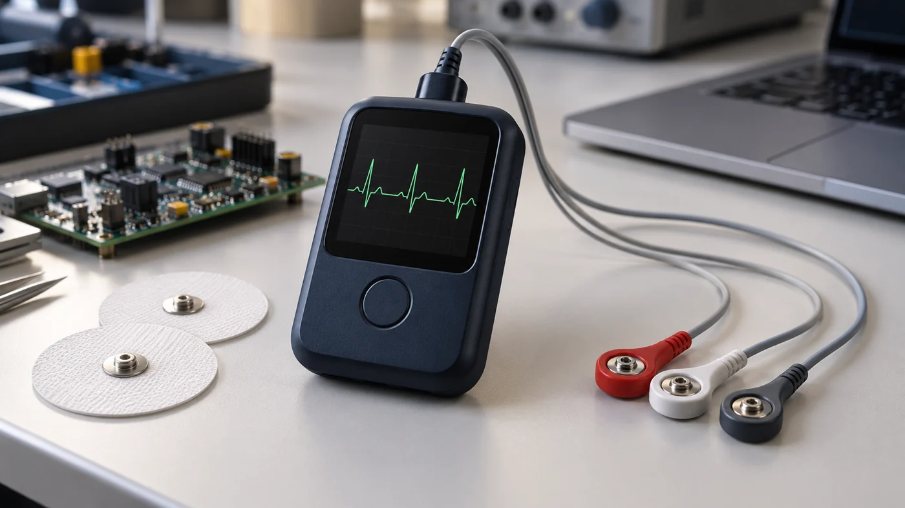

BIOMEDICAL ENGINEERING01 / PD
Pradipta Dolai
Student · Biomedical Engineering
InstituteAdamas UniversityFocusAI for HealthcareBatch2025 — 2029
BIOMEDICAL ENGINEERING · KOLKATA, INDIA
I’m Pradipta Dolai, a Biomedical Engineering student exploring biosensors, medical data, and AI for healthcare.
Student · Biomedical Engineering
03 / EDUCATION
Academic study and specialized learning, from science fundamentals to biomedical sensors.
Adamas University, Kolkata
Biosensors · Medical instrumentation · AI for healthcare
CGPA: 7/10
DBBV · Dhamtor, Paschim Medinipur
Physics · Chemistry · Biology
84.36 percentile
Indian Institute of Science · Coursera
Fundamentals of Sensors · Biomedical Systems · MEMS sensor design
Explore supporting credentials ↓Completed a STTP on Frontiers of Biomedical Engineering focusing on Biosensors, Biomaterials, and Regenerative Medicine. Adamas University · August 17–24, 2026 View training certificate ↗
04 / SELECTED WORK
01 · RESEARCH PROTOTYPE
Brain MRI Research Classification Dashboard
A research workflow connecting a ResNet18 classifier to FastAPI and an interactive dashboard. Supports image previews, four-class scores, and sequential batches of up to 20 images.
Research and education only. Not clinically validated.
View public repository ↗
02 · BIOMEDICAL PROJECT
An ECG project at the intersection of signal monitoring and AI. Detailed documentation and implementation are private.
View repository ↗03 · FORAGE VIRTUAL EXPERIENCE
Investigated surgical robotic arm response delays, compared three commands, and documented simulated control-system improvements in a diagnostic report.
Completed October 16, 2026
05 / APPLIED LEARNING
The programs below are Forage virtual experiences, separate from conventional employment.
JOHNSON & JOHNSON MEDTECH · FORAGE Virtual experience
Investigated surgical robotic arm response latency using Python, NumPy, and Jupyter. Modeled a reduction from 150 ms to 120 ms and documented optimization recommendations as simulation outcomes.
View completion certificate ↗DELOITTE · FORAGE Virtual experience
Analyzed and classified datasets in Excel, built a Tableau dashboard, and used forensic and analytical techniques to communicate business insights.
View completion certificate ↗QUANTIUM · FORAGE Virtual experience
Prepared data and explored customer analytics, then worked through experimentation, uplift testing, and the commercial application of analytical findings.
View completion certificate ↗TATA · FORAGE Virtual experience
Explored data analysis and risk profiling, AI-based delinquency prediction, and business reporting for collections strategy. Practiced turning analytical findings into recommendations for an AI-driven collections workflow.
View completion certificate ↗VISTA · FORAGE Virtual experience
Built fluency in prompt and contextual engineering, and applied prompting techniques to automate a professional workflow in a simulated work setting.
View completion certificate ↗06 / TECHNICAL TOOLKIT
Python · C · MATLAB · HTML / CSS / JavaScript
CNNs · ResNet18 · Machine learning basics · Generative AI · Prompt engineering · AI agents
Biosensors · Signal processing · Medical devices / ISO 13485 · Electronic control systems · Digital electronics
NumPy · PyTorch · FastAPI
Power BI · DAX · Microsoft Excel · Tableau
GitHub · Jupyter
The software behind my learning, analysis, and research prototypes.
07 / CONTINUOUS LEARNING
Browse the original documents. Issuer record links are included where present in the document; external verification has not been independently completed.
22 credentials
Additional résumé-listed credentials awaiting document integration: SkillMed ISO 13485, Oracle Agentic AI, and Google AI for Data Analysis. Dates on image-only documents need review.
THE FULL PICTURE
Education, projects, technical skills, and virtual experience.
08 / LET’S CONNECT
Have a project, research question, or opportunity in mind? I’d love to hear about it.
For biomedical engineering, healthcare AI, research collaborations, and opportunities to learn and contribute.